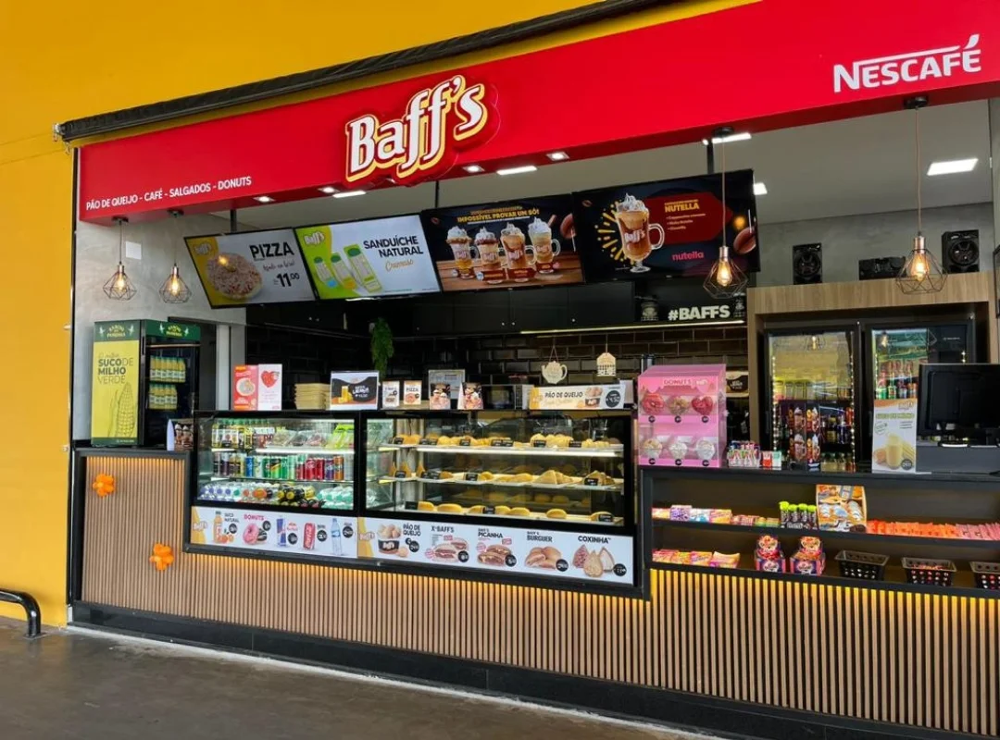

Nome Usuário

Editar Usuário
Al. Francisco Alves, 162. Nova Tatuí.
Favoritos
Meus Estabelecimentos
Meus Eventos
Pontos Turísticos

Sair
Voltar


Editar Estabelecimento
Nova Postagem
Nome do Estabelecimento
5.0
Aberto
Das 7:00 às 18:00
O Palácio do Sorvete é uma sorveteria típica que encanta os moradores e visitantes com suas delícias geladas. Localizada em uma charmosa esquina da cidade, esta sorveteria é conhecida por sua atmosfera acolhedora e pela variedade de sabores artesanais que oferece. Desde os clássicos como baunilha e chocolate até os mais exóticos como maracujá com gengibre, há opções para todos os gostos.